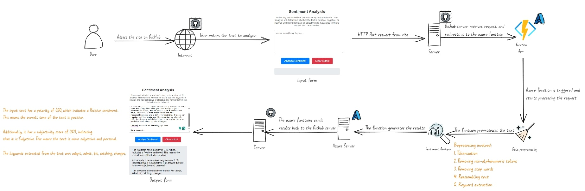

Sentiment Analysis Application
Project Overview: The Sentiment Analysis Application is a web-based tool that allows users to analyze the sentiment of any text input. The application determines whether the text is positive, neutral, or negative and also provides an analysis of the subjectivity and key themes within the text.

Workflow
- User Input: Users enter text into the application's interface to be analyzed.
- Internet Connectivity: The application utilizes internet connectivity to communicate between the user and the server hosted on GitHub.
- Server Communication: The input text is sent to a server hosted on GitHub for processing.
- Sentiment Analysis Processing: The GitHub server processes the text using an Azure Machine Learning service, leveraging advanced natural language processing algorithms.
Analysis Output
- Polarity Score: The application returns a polarity score indicating the sentiment of the text. For example, a score of 0.30 suggests a positive sentiment.
- Subjectivity Score: A subjectivity score is provided to indicate how subjective or objective the text is. A score of 0.59 means the text is more subjective.
- Keywords: The application extracts and displays key themes and keywords from the text for additional insights.
Preprocessing Steps
- Tokenization: Breaking down the text into individual words or tokens.
- Removing Non-Alphanumeric Tokens: Filtering out symbols and non-alphanumeric characters to clean the text.
- Removing Stop Words: Excluding common words that do not add significant meaning, such as "and," "the," etc.
- Reassembling Text: Reconstructing the text after cleaning and filtering.
- Keyword Extraction: Identifying and extracting important keywords from the text.
Key Features
- User-Friendly Interface: The application offers a simple and intuitive interface for users to input text and view analysis results.
- Real-Time Analysis: Sentiment analysis is performed in real-time, providing immediate feedback to the user.
- Detailed Insights: In addition to sentiment scores, the application provides a breakdown of the text's subjectivity and highlights key themes and keywords.
Technologies Used
- Frontend: HTML, CSS, JavaScript for the user interface.
- Backend: Python, Flask for server-side processing.
- Machine Learning: Azure Machine Learning services for sentiment analysis.
- Hosting: GitHub for hosting the server code.
This project showcases the integration of machine learning with web development to provide meaningful text analysis tools. It highlights skills in frontend and backend development, natural language processing, and cloud-based machine learning services.